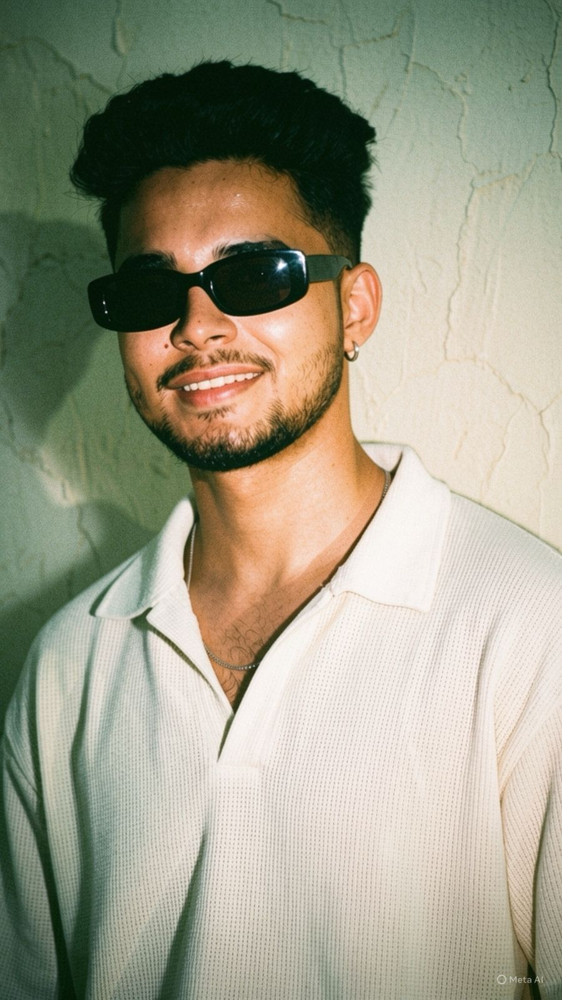

Samarth Rajput
Content Creator • Video Editor
Behind every smile is a story nobody knows...

“Naam sirf Samarth Rajput nahi, ek sapna hai jo har din aur bada ho raha hai.” Mera naam Samarth Pratap Singh, ya Samarth Rajput hai. Main ek simple background se belong karta hoon, lekin mere sapne kabhi simple nahi rahe. Zindagi ne mujhe bahut si challenges di hain, par maine hamesha unhe apni strength banaya. Main maanta hoon ki success sirf talent se nahi, balki consistency, discipline aur hard work se milti hai. Bachpan se hi mujhe kuch alag karne ka junoon tha. Jab dusre log sirf sapne dekhte the, tab maine un sapno ke liye mehnat karna shuru kar diya. Fitness, technology, content creation aur business jaise fields ne mujhe hamesha attract kiya. Isi passion ke saath maine khud ko har din improve karna apna mission bana liya. Main believe karta hoon ki har failure ek nayi learning lekar aata hai. Isliye kabhi haar maan kar rukna meri aadat nahi rahi. Chahe gym ho, coding ho, ya apna brand build karna ho, main har kaam poori dedication ke saath karta hoon. Mera dream sirf successful banna nahi, balki apni family ka naam roshan karna aur hazaron logon ko inspire karna hai. Meri personality simple hai, lekin meri thinking badi hai. Main respect, honesty aur loyalty ko sabse zyada importance deta hoon. Mere liye asli success wahi hai jab meri wajah se kisi aur ki life mein positive change aaye. Aaj main apne goals ki taraf ek-ek kadam badha raha hoon. Shayad meri journey abhi shuru hui hai, lekin mujhe yakeen hai ki ek din meri story un logon ke liye inspiration banegi jo apne sapno ke liye lad rahe hain. Main maanta hoon ki agar irade mazboot ho, toh koi bhi manzil door nahi hoti.